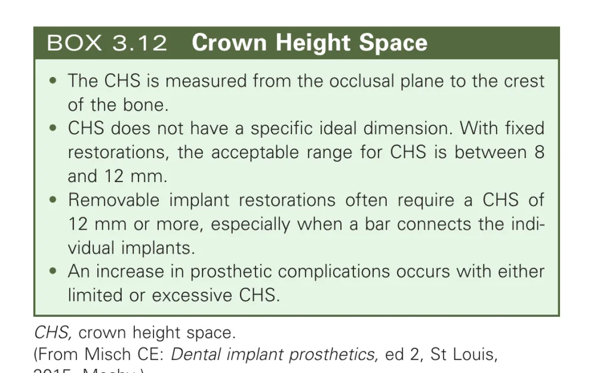
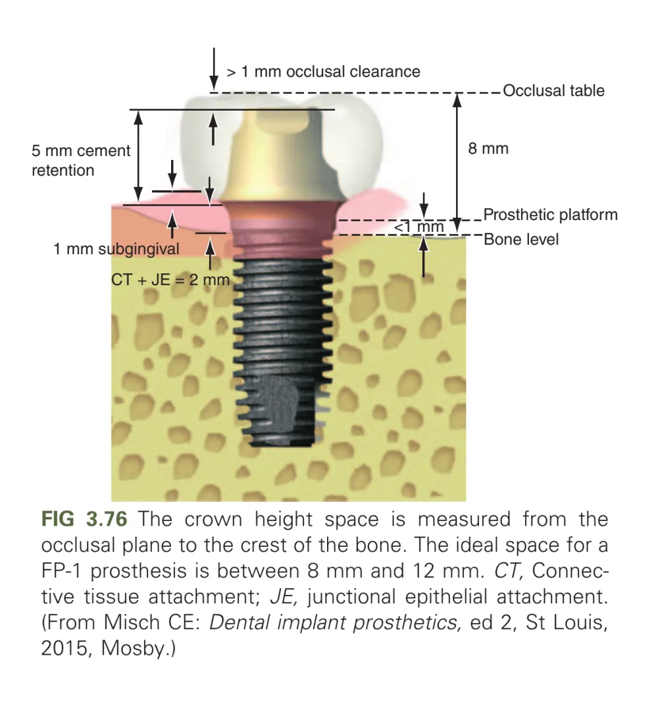

نسخه استخراجشده؛ ترجمه یا تأیید علمی انجام نشده است. وضعیت: captured
در ماژول ۱ و در یونیت استخوان موجود بارها به CHS اشاره کردیم. این درس آن را دقیق میکند.
تعریف پایه (کادر ۳٫۱۲): «CHS از صفحهی اکلوزال تا کرست استخوان اندازهگیری میشود.»
و اکنون یک ظرافت که اگر ندانی، در ناحیهی قدامی اشتباه اندازه میگیری:
«در نواحی قدامی دهان، وجود اوربایت عمودی به این معناست که CHS در ماگزیلا بزرگتر از فاصلهی کرست ریج تا لبهی انسیزال دندانهای مقابل است.»
و قاعدهی تفکیکشده:
• «CHS قدامی مندیبل معمولاً از کرست ریج تا لبهی انسیزال مندیبل اندازهگیری میشود.»
• «ولی CHS قدامی ماگزیلا از استخوان کرستال ماگزیلا تا لبهی انسیزال ماگزیلا اندازهگیری میشود، نه تا موقعیت تماس اکلوزال.»
چرا؟ چون اوربایت عمودی وجود دارد. اگر در ماگزیلا تا نقطهی تماس اندازه بگیری، بخشی از ارتفاع تاج را نادیده گرفتهای — همان بخشی که بهاندازهی اوربایت، از لبهی انسیزال مندیبل پایینتر میآید، و دقیقاً همان بخشی که در یونیت ۱٫۴ دیدی بهعنوان بازوی اهرم عمل میکند.
و اکنون بازههای مجاز — دو عدد که باید بدانی:
«CHS بُعد ایدهآل مشخصی ندارد. با ترمیمهای ثابت، بازهی قابلقبول CHS میان ۸ تا ۱۲ میلیمتر است.»
«ترمیمهای متحرک ایمپلنت اغلب به CHS برابر ۱۲ میلیمتر یا بیشتر نیاز دارند، بهویژه وقتی یک بار ایمپلنتهای منفرد را به هم متصل میکند.»
و این بازهی ۸ تا ۱۲ میلیمتر باید اینها را در خود جا دهد:
«عرض بیولوژیک، ارتفاع اباتمنت برای گیر سمانی یا فیکس شدن پیچ پروتز، استحکام مادهی اکلوزال، زیبایی، و ملاحظات بهداشتی اطراف کراونهای اباتمنت.»
پنج چیز در یک فضای ۸ تا ۱۲ میلیمتری. و به همین دلیل است که وقتی CHS کمتر از ۸ میلیمتر باشد، مشکل شروع میشود.
و برای متحرک: «برای دندانهای مصنوعی و استحکام بیس آکریلی، اتچمنتها، بارها، و ملاحظات بهداشت دهان.»
و اکنون جملهای که کل این درس را جمع میکند و اغلب فراموش میشود:
«افزایش عوارض پروتزی هم با CHS محدود و هم با CHS بیشازحد رخ میدهد.»
هر دو سو. این نکته را نگه دار — چون همهی توجه معمولاً به CHS زیاد معطوف میشود، در حالی که CHS کم هم عارضهساز است: جا برای عرض بیولوژیک، ارتفاع گیر، و ضخامت ماده نمیماند.
پس CHS یک متغیر دوسویه است، نه یک متغیر «هرچه کمتر بهتر».

با یک تعریف شروع کنیم: «تشدیدکنندههای نیرو، موقعیتها یا وسایلی هستند که مقدار نیروی اعمالشده بر یک سیستم را افزایش میدهند و شامل پیچ، قرقره، سطح شیبدار، و اهرم میشوند.»
و سپس ارتباط را برقرار میکند: «بیومکانیک CHS مستقیماً با مکانیک اهرم مرتبط است.»
این مفهوم حتی به ارشمیدس برمیگردد: «ویژگیهای اهرم از زمان ارشمیدس، دو هزار سال پیش، شناخته شدهاند» — و جملهی مشهورش: «به من یک اهرم و یک تکیهگاه و جایی برای ایستادن بدهید تا جهان را جابهجا کنم.»
و اکنون تعریف مرکزی این درس:
«بهجای یک کانتیلور خلفی، CHS یک کانتیلور عمودی است وقتی هر بار جانبی یا کانتیلورشده اعمال شود، و همچنین یک تشدیدکنندهی نیروست.»
به قید این جمله دقت کن — و این مهمترین ظرافت این درس است:
«وقتی هر بار جانبی یا کانتیلورشده اعمال شود.»
یعنی CHS بهخودیخود مضر نیست. به بیان روشنتر: «وقتی یک بار در امتداد محور طولی به ایمپلنت اعمال شود، ارتفاع تاج استرس را تشدید نمیکند.»
پس CHS یک ضریب است، نه یک نیرو. در بار محوری خالص، ضریبش تقریباً یک است. ولی بهمحض آنکه بار زاویهدار یا کانتیلور شود، CHS آن انحراف را چند برابر میکند.
و همین توضیح میدهد چرا CHS بالا در بیمار براکسر بسیار خطرناکتر از بیمار عادی است — چون براکسیسم دقیقاً همان بار جانبی را تولید میکند که CHS آمادهی تشدیدش است. دو عامل خطر که در هم ضرب میشوند، نه جمع.
و فهرست عوارضی که با افزایش CHS بیشتر میشوند:
«چون افزایش CHS مقدار نیرو را بالا میبرد، هر یک از عوارض مکانیکی مرتبط با پروتزهای ایمپلنت هم ممکن است افزایش یابد، از جمله خارج شدن پروتز از سمان، شل شدن پیچ (پروتزی یا اباتمنت)، و عوارض اتچمنت اوردنچر.»
و شاهدی از قوس کامل: مسائل پیچیدهی کانتیلور در مندیبل بیدندان نشان داده شده است، «جایی که طول کانتیلور خلفی مستقیماً با عوارض یا شکست پروتز مرتبط بود.»
و مومانها در سه صفحه: «بارهای ممان تمایل دارند چرخشهایی در سه صفحه ایجاد کنند» — با چرخش ساعتگرد و پادساعتگرد در هر صفحه، شش ممان — یعنی اثر CHS تکبُعدی نیست. و وقتی ارتفاع تاج از ۱۰ به ۲۰ میلیمتر میرسد، دو ممان از این شش به حدود دو برابر میرسند.
و اکنون دو آستانهی عملی که مستقیماً بر تصمیم پروتزی اثر میگذارند:
آستانهی یکم — پرسلن صورتی:
«وقتی فضای ارتفاع تاج بیش از ۱۲ میلیمتر باشد، اغلب از پرسلن صورتی (یا آکریل) برای جایگزینی بافت نرم استفاده میشود.»
عدد ۱۲ میلیمتر را نگه دار — بالاتر از آن، پروتز ثابت معمولاً به همان FP-3 میرسد که در یونیت ۲٫۱ دیدی. و اکنون میبینی که این تصمیم زیبایی، ریشهای ابعادی دارد.
آستانهی دوم — ثبات اوردنچر:
«یک اوردنچر RP-5 معمولاً وقتی فضای ارتفاع تاج بیشتر باشد، کمثباتتر است.»
و دلیلش: در اوردنچر RP-5، CHS دو جزء دارد — از کرست تا اتچمنت، و از اتچمنت تا صفحهی اکلوزال. هرچه جزء دوم بلندتر باشد، اوردنچر بیشتر روی اتچمنت میچرخد و پشتیبانی بافت نرم بیشتری (مثل باکال شلف) لازم است؛
این همان وضعیتی است که در یونیت ۲٫۳ در دیویژن C و D دیدی، جایی که CHS از ۱۵ و ۲۰ میلیمتر میگذرد. با این حال، در CHS زیاد تبدیل طرح به پروتز متحرک اغلب ارزش بررسی دارد: میتوان شب بیرونش آورد، ساپورت لب را بهتر میکند و حجم آکریل کافی دارد.
و بازگشت به راهکارها: از ماژول ۱ میدانی که وقتی CHS زیاد است، ابزارهایت اینهاست: افزایش شمار و اندازهی ایمپلنت، اسپلینت کردن، کوتاه کردن کانتیلورها، در نظر گرفتن ترمیم متحرک، و افزودن پشتیبانی بافت نرم در اوردنچر.
و یک قاعدهی عددی: وقتی CHS بیش از ۱۵ میلیمتر است، کانتیلور جایی ندارد، مگر همهی عوامل نیروی دیگر کم باشند.
و آنچه کماثر است: افزایش طول ایمپلنت. چون بیشتر استرس در چند میلیمتر کرستال استخوان (حدود ۷ تا ۹ میلیمتر) متمرکز است، بلندتر کردن ایمپلنت اثر ارتفاع تاج را خنثی نمیکند، مگر در استخوان بسیار ضعیف — برخلاف ریشهی دندان طبیعی که هرچه بلندتر باشد، نسبت تاج به ریشه بهتر میشود.
